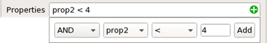
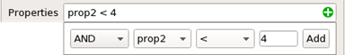

Filtering a Pattern Library
You can filter
a library based on pattern names, properties, and keys. You can
save the filtered patterns in a new library.
Prerequisites
A pattern library is open in the Calibre Pattern Matching GUI. See “Invoking the Calibre Pattern Matching GUI”.
The Explorer panel is visible. If it is not visible, choose .
Procedure
- For advanced filtering, such
as filtering by both properties and keys, do the following:
- Click the button
in the filter entry field to open the advanced filter window.
You can drag the filter window within the transcript pane to get a tabbed view or a side by side view.
- Click
the
 button to display
controls for creating a filter expression:
button to display
controls for creating a filter expression: - Click Filter to apply the filter parameters.
- Click the button
in the filter entry field to open the advanced filter window.